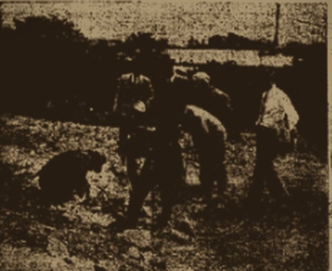
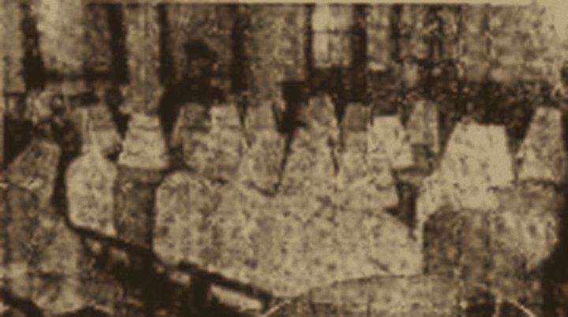
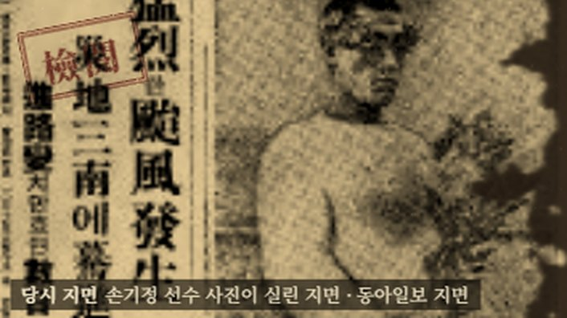

괴사건(怪事件)
괴이한 사건
죽첨정 괴사건 (1933)
새벽 매립지에서 시작된 23일의 수사. 신문은 엉뚱한 가족을 범인처럼 썼다.
제목 표현: 「層生의 怪事件」 本紙 1933.5.21

괴사건(怪事件)
괴이한 사건
새벽 매립지에서 시작된 23일의 수사. 신문은 엉뚱한 가족을 범인처럼 썼다.
제목 표현: 「層生의 怪事件」 本紙 1933.5.21

인생도장(人生屠場)
사람을 도살하던 곳
금광으로 위장한 산속에서 신도 수백 명이 살해됐다.

일장기(日章旗)
지워진 가슴의 표식
신문은 279일 동안 나오지 못했다.